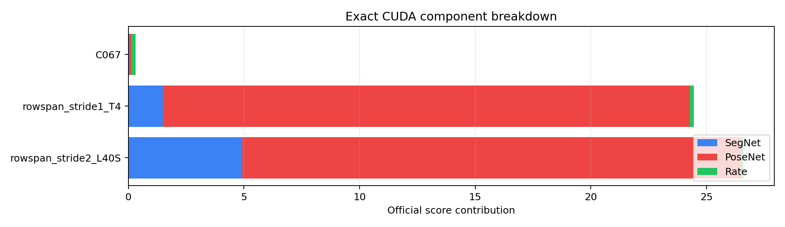

Control-plane report only. Score truth remains exact CUDA auth eval of exact archive bytes.

| label | score | bytes | dbytes | seg | pose | rate | pose ratio | seg ratio | GPU |
|---|---|---|---|---|---|---|---|---|---|
| C067 | 0.315617031 | 276,214 | 0 | 0.061244 | 0.070454 | 0.183920 | 1.000 | 1.000 | Tesla T4 |
| rowspan_stride1_T4 | 24.454797 | 251,500 | -24,714 | 1.500283 | 22.787051 | 0.167464 | 104609.401696 | 24.496816 | Tesla T4 |
| rowspan_stride2_L40S | 26.606439 | 176,108 | -100,106 | 4.919839 | 21.569337 | 0.117263 | 93727.719705 | 80.331771 | NVIDIA L40S |
# Yousfi-Fridrich Observability Report Schema: `yousfi_fridrich_observability_report_v1` This is a control-plane observability artifact. It does not promote, rank, or claim a new score. ## Target Gap - Best exact anchor: `C067` at `0.315617031`. - Target score: `0.300000000`. - Bytes to remove at unchanged distortion: `23,455`. ## Action Recommendations - `build_repaired_or_multimask_candidates`: Raw row-span replacement saves bytes but creates a component cliff. The next mask candidate should charge only consensus repair/fusion atoms around repeated PoseNet-sensitive regions. - `prioritize_large_rate_levers_before_micro_pose_polish`: At the current distortion level, sub-0.300 requires a material byte drop; pose-only micro-gains cannot close the full gap. - `promote_only_exact_archive_bytes`: Profiler, visualization, and byte-screen output are control-plane signals only. Every recommendation must resolve to a deterministic archive and exact CUDA auth eval. ## Exact Eval Component Breakdown | label | score | bytes | dbytes | seg | pose | rate | pose ratio | seg ratio | cliff | | --- | ---: | ---: | ---: | ---: | ---: | ---: | ---: | ---: | --- | | C067 | 0.315617031 | 276,214 | 0 | 0.061244 | 0.070454 | 0.183920 | 1.000 | 1.000 | no | | rowspan_stride1_T4 | 24.454797 | 251,500 | -24,714 | 1.500283 | 22.787051 | 0.167464 | 104609.401696 | 24.496816 | yes | | rowspan_stride2_L40S | 26.606439 | 176,108 | -100,106 | 4.919839 | 21.569337 | 0.117263 | 93727.719705 | 80.331771 | yes | ## Atom Subspace Summary Profile: `/Users/adpena/Projects/pact/experiments/results/c067_cmg3_rowspan_escape_atoms_20260502/rowspan_static_dynamic_active_subspace_profile.json` ### Top Pairs | key | hits | score proxy | bytes proxy | score per byte | | --- | ---: | ---: | ---: | ---: | | 69 | 89 | 0.001150918 | 961.000000 | 0.000001197625 | | 67 | 97 | 0.001124186 | 1064.000000 | 0.000001056566 | | 290 | 62 | 0.000809791 | 624.000000 | 0.000001297742 | | 285 | 110 | 0.001022447 | 1080.000000 | 0.000000946710 | | 70 | 74 | 0.000522241 | 444.000000 | 0.000001176219 | | 289 | 52 | 0.000556193 | 528.000000 | 0.000001053396 | | 286 | 94 | 0.000664359 | 696.000000 | 0.000000954539 | | 294 | 61 | 0.000533733 | 558.000000 | 0.000000956511 | | 292 | 58 | 0.000619197 | 708.000000 | 0.000000874572 | | 293 | 73 | 0.000438332 | 438.000000 | 0.000001000758 | | 164 | 22 | 0.000288963 | 216.000000 | 0.000001337792 | | 284 | 71 | 0.000463530 | 480.000000 | 0.000000965688 | | 272 | 52 | 0.000310929 | 312.000000 | 0.000000996568 | | 273 | 48 | 0.000290203 | 288.000000 | 0.000001007650 | | 66 | 41 | 0.000261244 | 246.000000 | 0.000001061969 | | 1 | 37 | 0.000408335 | 472.000000 | 0.000000865116 | ### Top Classes | key | hits | score proxy | bytes proxy | score per byte | | --- | ---: | ---: | ---: | ---: | | 2 | 1514 | 0.011207225 | 12058.000000 | 0.000000929443 | | 0 | 496 | 0.004239673 | 3819.000000 | 0.000001110153 | | 4 | 38 | 0.000205959 | 228.000000 | 0.000000903328 | ### Top Class Confusions | key | hits | score proxy | bytes proxy | score per byte | | --- | ---: | ---: | ---: | ---: | | 2->3 | 1514 | 0.011207225 | 12058.000000 | 0.000000929443 | | 0->3 | 482 | 0.004121126 | 3687.000000 | 0.000001117745 | | 0->4 | 14 | 0.000118548 | 132.000000 | 0.000000898087 | | 0->2 | 4 | 0.000375207 | 380.000000 | 0.000000987386 | | 4->0 | 38 | 0.000205959 | 228.000000 | 0.000000903328 | ## Generated Figures - `score_breakdown.svg` - `top_pairs.svg` - `target_gap.svg` - `score_breakdown.png` - `top_pairs.png` - `pair_centroid_hotspots.png` - `class_confusions.png`